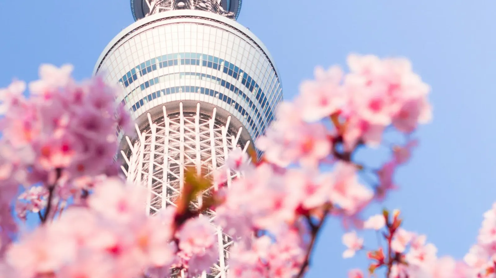

TOKYO AIRPORTS AT A GLANCE
🚆 Narita: Skyliner ~40 min to Ueno, ¥2,580See trains ↗
🚆 Haneda: 15–30 min to the citySee trains ↗
🏨 Sleep: Ueno, Tokyo Station, ShinjukuSee hotels ↗
✈️ Haneda is closer than NaritaSee flights ↗
The short answer
- Narita is far (about 60 km): take the Skyliner to Ueno/Nippori (about 40 minutes) or the Narita Express to Tokyo Station, Shinjuku and Shibuya (about an hour).
- Haneda is close: Keikyu trains or the Tokyo Monorail get you into the city in 15–30 minutes for a few hundred yen.
¥2,580Skyliner Narita → Ueno
¥3,140Narita Express → Tokyo Sta.
¥5,200N'EX round trip for visitors
From Narita Airport
| Option | Time | Adult fare | Best for |
|---|---|---|---|
| Keisei Skyliner | about 36 min to Nippori, 41 min to Ueno | ¥2,580 (cheaper booked online) | Hotels in Ueno, Asakusa, east Tokyo |
| Narita Express (N'EX) | from about 53 min to Tokyo Station | ¥3,140 to Tokyo; ¥3,330 to Shinjuku, Shibuya, Shinagawa | Tokyo Station, Shinjuku, Shibuya; JR Pass holders |
| Keisei Access Express | about 50 min to Asakusa | cheapest train, no reserved seat | Light luggage, tight budget |
| Airport Limousine Bus | about 1 h 40 min, depends on traffic | ¥3,100 to Tokyo Station; ¥3,600 to Shinjuku/Shibuya | Big luggage, drop-off at many hotels |
Foreign visitors can buy the N'EX round-trip ticket for ¥5,200 (in and out within 14 days) — much cheaper than two regular tickets. The Skyliner is not covered by the JR Pass; the Narita Express is.
Taxis from Narita are very expensive (well over ¥20,000 to central Tokyo). Only worth it for a family with lots of luggage arriving late at night.
From Haneda Airport
| Option | Time | Goes to | Good to know |
|---|---|---|---|
| Keikyu Line | about 15–20 min to Shinagawa | Shinagawa, then JR to the rest of Tokyo; some trains continue to Asakusa | Cheapest and simplest; works with Suica/PASMO |
| Tokyo Monorail | about 15–20 min to Hamamatsucho | Hamamatsucho, change to the JR Yamanote Line | Covered by the JR Pass |
| Airport Limousine Bus | 30–60 min, depends on traffic | Shinjuku, Shibuya, Tokyo Station, big hotels | Easy with big suitcases |
| Taxi | 20–40 min | Door to door | Fixed-fare options to central areas; reasonable for 3–4 people |
Which one for your hotel
- Ueno, Asakusa, Akihabara: Skyliner from Narita; Keikyu (direct to Asakusa on some trains) from Haneda.
- Tokyo Station, Ginza: Narita Express or limousine bus from Narita; Monorail or Keikyu + JR from Haneda.
- Shinjuku, Shibuya: Narita Express (direct) from Narita; limousine bus or Keikyu + JR from Haneda.
Tips for arrival day
- Get a Suica or PASMO as soon as you land — it works on Keikyu, the Monorail and the subway. Read our Suica and PASMO guide.
- If you start a JR Pass on arrival, the Narita Express and Tokyo Monorail are included — read Is the JR Pass worth it? first.
- Big suitcases are a pain at rush hour (about 7:30–9:30 and 17:30–19:30): consider the bus or a luggage delivery service (takkyubin) to your hotel.
- Late arrivals: the last trains leave around midnight; check before you land.
📚 Official sources: Narita Airport · Haneda Airport
Checked against official sources. Rules and prices change: always confirm on these sites before you travel.
Checked against official sources. Rules and prices change: always confirm on these sites before you travel.
PLAN IT
Plan your trip
🚆 Narita → TokyoSkyliner or Narita ExpressSee trains ↗🚆 Haneda → TokyoMonorail or Keikyu in 15–30 minSee trains ↗🏨 Hotels in TokyoChoose by your airport lineSee hotels ↗🎫 JR PassCovers the Narita ExpressSee prices ↗✈️ Flights to TokyoHaneda is closer to the citySee flights ↗
Some links are affiliate links: booking through them costs you nothing extra and helps keep 687 free.
687 JAPAN
From the arrivals hall to your first evening in Tokyo.
In 687 Japan your arrival is a stage of the trip: the right station, the transit route in Apple Maps and a ticket search ready with your date — and NOW plans the free hours after you land around your check-in time, so the first day is not wasted.